Trabajamos para mejorar la calidad de vida en la Colonia de Patricios
"El gato es el único animal que ha logrado domesticar al hombre." - Marcel Mauss
VERY TITLE
Rescatamos gatos y gatitos, los ponemos en condiciones y les damos albergue hasta que son adoptados

VERY TITLE
Rescatamos gatos y gatitos, los ponemos en condiciones y les damos albergue hasta que son adoptados

VERY TITLE
Rescatamos gatos y gatitos, los ponemos en condiciones y les damos albergue hasta que son adoptados

VERY TITLE
Rescatamos gatos y gatitos, los ponemos en condiciones y les damos albergue hasta que son adoptados
¿Querés ayudarnos? Tu donación nos permite continuar nuestro esfuerzo de castración, recuperación y rescate de gatos en la colonia de Parque Patricios.
Podés hacer una donación única o sumarte a nuestro madrinazgo mensual. En cualquiera de los dos casos el aporte es a voluntad
Ayudanos a seguir ayudando ¡Todo suma!
 *Todos los pagos son procesados y protegidos por Mercago Pago.